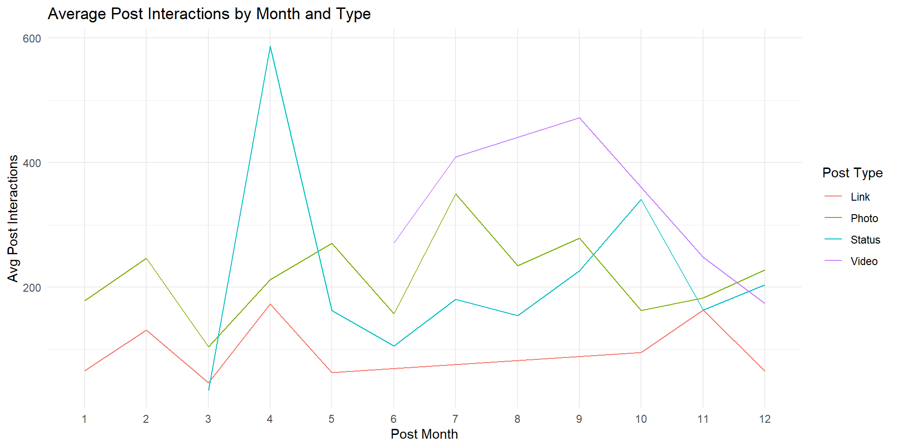
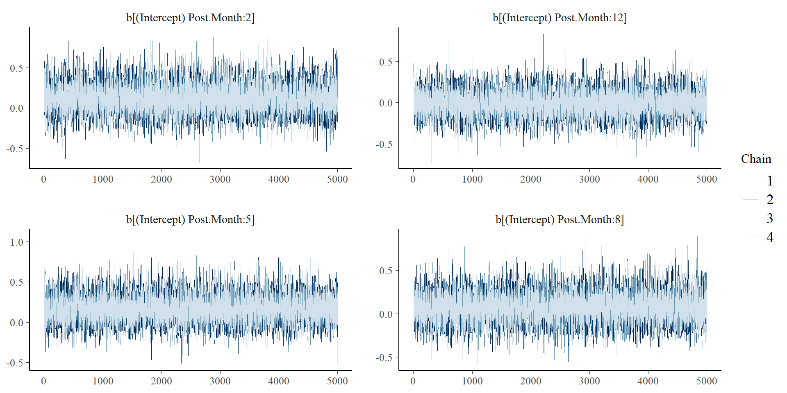
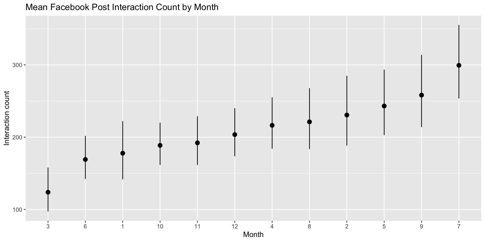
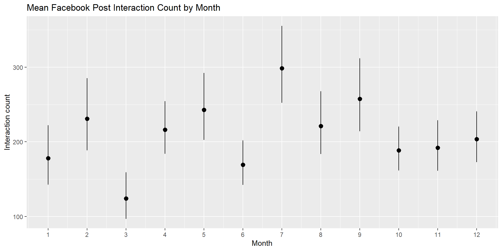
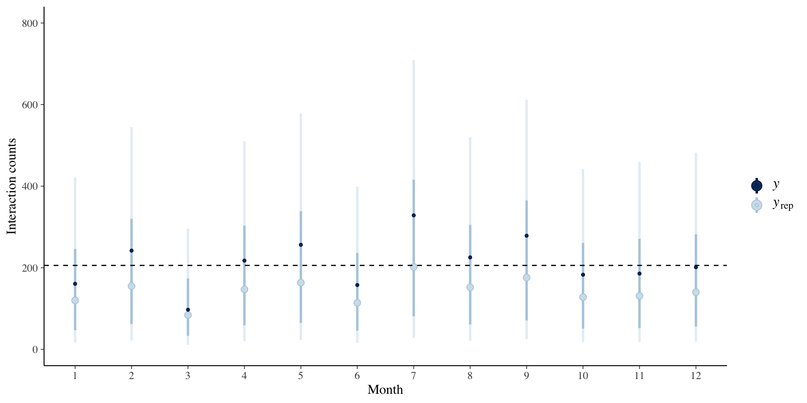

index Post.Month Post.Weekday Post.Hour Total.Interactions
1 1 12 4 3 100
2 2 12 3 10 164
3 3 12 3 3 80
4 4 12 2 10 1777
5 5 12 2 3 393
6 6 12 1 9 186
Lifetime.Engaged.Users Type Paid
1 178 Photo 0
2 1457 Status 0
3 177 Photo 0
4 2211 Photo 1
5 671 Photo 0
6 1191 Status 0Marketing on Facebook: Temporal and Targeted Approaches
Anthony, Brandon, Ghadah, Nicholas, Vinh
Facebook Dataset
2014 Facebook performance metrics of a renowned cosmetics brand containing 500 observations (posts) and 20 variables to describe its engagement
Distribution of Interactions
“link” posts tend to have LOWER counts and MORE consistent interaction counts
“video” posts tend to have a much LARGER VARIANCE in their interaction counts
Interactions by Month and Post Type
Temporally, photos and links tend to stay fairly consistent while status posts appear to spike in interactions in April and October.
Note: No video post data exist for months 1-5
Research Questions
To explore these patterns, we tackle the following:
- Are there significant differences in interaction rates depending on the month a post is made?
- How can interactions be increased in months with lower rates?
Model
We construct a hierarchical model for interaction rates, grouped by month
We start with a weakly informative prior based on previously observed rates, but with a large variance
Model (cont.)
SAMPLING FOR MODEL 'count' NOW (CHAIN 1).
Chain 1:
Chain 1: Gradient evaluation took 0.000272 seconds
Chain 1: 1000 transitions using 10 leapfrog steps per transition would take 2.72 seconds.
Chain 1: Adjust your expectations accordingly!
Chain 1:
Chain 1:
Chain 1: Iteration: 1 / 10000 [ 0%] (Warmup)
Chain 1: Iteration: 1000 / 10000 [ 10%] (Warmup)
Chain 1: Iteration: 2000 / 10000 [ 20%] (Warmup)
Chain 1: Iteration: 3000 / 10000 [ 30%] (Warmup)
Chain 1: Iteration: 4000 / 10000 [ 40%] (Warmup)
Chain 1: Iteration: 5000 / 10000 [ 50%] (Warmup)
Chain 1: Iteration: 5001 / 10000 [ 50%] (Sampling)
Chain 1: Iteration: 6000 / 10000 [ 60%] (Sampling)
Chain 1: Iteration: 7000 / 10000 [ 70%] (Sampling)
Chain 1: Iteration: 8000 / 10000 [ 80%] (Sampling)
Chain 1: Iteration: 9000 / 10000 [ 90%] (Sampling)
Chain 1: Iteration: 10000 / 10000 [100%] (Sampling)
Chain 1:
Chain 1: Elapsed Time: 0.270404 seconds (Warm-up)
Chain 1: 0.301935 seconds (Sampling)
Chain 1: 0.572339 seconds (Total)
Chain 1:
SAMPLING FOR MODEL 'count' NOW (CHAIN 2).
Chain 2:
Chain 2: Gradient evaluation took 8e-06 seconds
Chain 2: 1000 transitions using 10 leapfrog steps per transition would take 0.08 seconds.
Chain 2: Adjust your expectations accordingly!
Chain 2:
Chain 2:
Chain 2: Iteration: 1 / 10000 [ 0%] (Warmup)
Chain 2: Iteration: 1000 / 10000 [ 10%] (Warmup)
Chain 2: Iteration: 2000 / 10000 [ 20%] (Warmup)
Chain 2: Iteration: 3000 / 10000 [ 30%] (Warmup)
Chain 2: Iteration: 4000 / 10000 [ 40%] (Warmup)
Chain 2: Iteration: 5000 / 10000 [ 50%] (Warmup)
Chain 2: Iteration: 5001 / 10000 [ 50%] (Sampling)
Chain 2: Iteration: 6000 / 10000 [ 60%] (Sampling)
Chain 2: Iteration: 7000 / 10000 [ 70%] (Sampling)
Chain 2: Iteration: 8000 / 10000 [ 80%] (Sampling)
Chain 2: Iteration: 9000 / 10000 [ 90%] (Sampling)
Chain 2: Iteration: 10000 / 10000 [100%] (Sampling)
Chain 2:
Chain 2: Elapsed Time: 0.298032 seconds (Warm-up)
Chain 2: 0.362949 seconds (Sampling)
Chain 2: 0.660981 seconds (Total)
Chain 2:
SAMPLING FOR MODEL 'count' NOW (CHAIN 3).
Chain 3:
Chain 3: Gradient evaluation took 9e-06 seconds
Chain 3: 1000 transitions using 10 leapfrog steps per transition would take 0.09 seconds.
Chain 3: Adjust your expectations accordingly!
Chain 3:
Chain 3:
Chain 3: Iteration: 1 / 10000 [ 0%] (Warmup)
Chain 3: Iteration: 1000 / 10000 [ 10%] (Warmup)
Chain 3: Iteration: 2000 / 10000 [ 20%] (Warmup)
Chain 3: Iteration: 3000 / 10000 [ 30%] (Warmup)
Chain 3: Iteration: 4000 / 10000 [ 40%] (Warmup)
Chain 3: Iteration: 5000 / 10000 [ 50%] (Warmup)
Chain 3: Iteration: 5001 / 10000 [ 50%] (Sampling)
Chain 3: Iteration: 6000 / 10000 [ 60%] (Sampling)
Chain 3: Iteration: 7000 / 10000 [ 70%] (Sampling)
Chain 3: Iteration: 8000 / 10000 [ 80%] (Sampling)
Chain 3: Iteration: 9000 / 10000 [ 90%] (Sampling)
Chain 3: Iteration: 10000 / 10000 [100%] (Sampling)
Chain 3:
Chain 3: Elapsed Time: 0.299395 seconds (Warm-up)
Chain 3: 0.363966 seconds (Sampling)
Chain 3: 0.663361 seconds (Total)
Chain 3:
SAMPLING FOR MODEL 'count' NOW (CHAIN 4).
Chain 4:
Chain 4: Gradient evaluation took 1e-05 seconds
Chain 4: 1000 transitions using 10 leapfrog steps per transition would take 0.1 seconds.
Chain 4: Adjust your expectations accordingly!
Chain 4:
Chain 4:
Chain 4: Iteration: 1 / 10000 [ 0%] (Warmup)
Chain 4: Iteration: 1000 / 10000 [ 10%] (Warmup)
Chain 4: Iteration: 2000 / 10000 [ 20%] (Warmup)
Chain 4: Iteration: 3000 / 10000 [ 30%] (Warmup)
Chain 4: Iteration: 4000 / 10000 [ 40%] (Warmup)
Chain 4: Iteration: 5000 / 10000 [ 50%] (Warmup)
Chain 4: Iteration: 5001 / 10000 [ 50%] (Sampling)
Chain 4: Iteration: 6000 / 10000 [ 60%] (Sampling)
Chain 4: Iteration: 7000 / 10000 [ 70%] (Sampling)
Chain 4: Iteration: 8000 / 10000 [ 80%] (Sampling)
Chain 4: Iteration: 9000 / 10000 [ 90%] (Sampling)
Chain 4: Iteration: 10000 / 10000 [100%] (Sampling)
Chain 4:
Chain 4: Elapsed Time: 0.377223 seconds (Warm-up)
Chain 4: 0.369177 seconds (Sampling)
Chain 4: 0.7464 seconds (Total)
Chain 4: Priors for model 'fb_prior'
------
Intercept (after predictors centered)
~ normal(location = 212, scale = 100)
Auxiliary (reciprocal_dispersion)
~ exponential(rate = 1)
Covariance
~ decov(reg. = 1, conc. = 1, shape = 1, scale = 1)
------
See help('prior_summary.stanreg') for more detailsModel (cont.)
SAMPLING FOR MODEL 'count' NOW (CHAIN 1).
Chain 1:
Chain 1: Gradient evaluation took 0.000131 seconds
Chain 1: 1000 transitions using 10 leapfrog steps per transition would take 1.31 seconds.
Chain 1: Adjust your expectations accordingly!
Chain 1:
Chain 1:
Chain 1: Iteration: 1 / 10000 [ 0%] (Warmup)
Chain 1: Iteration: 1000 / 10000 [ 10%] (Warmup)
Chain 1: Iteration: 2000 / 10000 [ 20%] (Warmup)
Chain 1: Iteration: 3000 / 10000 [ 30%] (Warmup)
Chain 1: Iteration: 4000 / 10000 [ 40%] (Warmup)
Chain 1: Iteration: 5000 / 10000 [ 50%] (Warmup)
Chain 1: Iteration: 5001 / 10000 [ 50%] (Sampling)
Chain 1: Iteration: 6000 / 10000 [ 60%] (Sampling)
Chain 1: Iteration: 7000 / 10000 [ 70%] (Sampling)
Chain 1: Iteration: 8000 / 10000 [ 80%] (Sampling)
Chain 1: Iteration: 9000 / 10000 [ 90%] (Sampling)
Chain 1: Iteration: 10000 / 10000 [100%] (Sampling)
Chain 1:
Chain 1: Elapsed Time: 8.58211 seconds (Warm-up)
Chain 1: 8.58565 seconds (Sampling)
Chain 1: 17.1678 seconds (Total)
Chain 1:
SAMPLING FOR MODEL 'count' NOW (CHAIN 2).
Chain 2:
Chain 2: Gradient evaluation took 0.00011 seconds
Chain 2: 1000 transitions using 10 leapfrog steps per transition would take 1.1 seconds.
Chain 2: Adjust your expectations accordingly!
Chain 2:
Chain 2:
Chain 2: Iteration: 1 / 10000 [ 0%] (Warmup)
Chain 2: Iteration: 1000 / 10000 [ 10%] (Warmup)
Chain 2: Iteration: 2000 / 10000 [ 20%] (Warmup)
Chain 2: Iteration: 3000 / 10000 [ 30%] (Warmup)
Chain 2: Iteration: 4000 / 10000 [ 40%] (Warmup)
Chain 2: Iteration: 5000 / 10000 [ 50%] (Warmup)
Chain 2: Iteration: 5001 / 10000 [ 50%] (Sampling)
Chain 2: Iteration: 6000 / 10000 [ 60%] (Sampling)
Chain 2: Iteration: 7000 / 10000 [ 70%] (Sampling)
Chain 2: Iteration: 8000 / 10000 [ 80%] (Sampling)
Chain 2: Iteration: 9000 / 10000 [ 90%] (Sampling)
Chain 2: Iteration: 10000 / 10000 [100%] (Sampling)
Chain 2:
Chain 2: Elapsed Time: 8.35436 seconds (Warm-up)
Chain 2: 9.43808 seconds (Sampling)
Chain 2: 17.7924 seconds (Total)
Chain 2:
SAMPLING FOR MODEL 'count' NOW (CHAIN 3).
Chain 3:
Chain 3: Gradient evaluation took 0.000212 seconds
Chain 3: 1000 transitions using 10 leapfrog steps per transition would take 2.12 seconds.
Chain 3: Adjust your expectations accordingly!
Chain 3:
Chain 3:
Chain 3: Iteration: 1 / 10000 [ 0%] (Warmup)
Chain 3: Iteration: 1000 / 10000 [ 10%] (Warmup)
Chain 3: Iteration: 2000 / 10000 [ 20%] (Warmup)
Chain 3: Iteration: 3000 / 10000 [ 30%] (Warmup)
Chain 3: Iteration: 4000 / 10000 [ 40%] (Warmup)
Chain 3: Iteration: 5000 / 10000 [ 50%] (Warmup)
Chain 3: Iteration: 5001 / 10000 [ 50%] (Sampling)
Chain 3: Iteration: 6000 / 10000 [ 60%] (Sampling)
Chain 3: Iteration: 7000 / 10000 [ 70%] (Sampling)
Chain 3: Iteration: 8000 / 10000 [ 80%] (Sampling)
Chain 3: Iteration: 9000 / 10000 [ 90%] (Sampling)
Chain 3: Iteration: 10000 / 10000 [100%] (Sampling)
Chain 3:
Chain 3: Elapsed Time: 8.73648 seconds (Warm-up)
Chain 3: 9.68581 seconds (Sampling)
Chain 3: 18.4223 seconds (Total)
Chain 3:
SAMPLING FOR MODEL 'count' NOW (CHAIN 4).
Chain 4:
Chain 4: Gradient evaluation took 0.000113 seconds
Chain 4: 1000 transitions using 10 leapfrog steps per transition would take 1.13 seconds.
Chain 4: Adjust your expectations accordingly!
Chain 4:
Chain 4:
Chain 4: Iteration: 1 / 10000 [ 0%] (Warmup)
Chain 4: Iteration: 1000 / 10000 [ 10%] (Warmup)
Chain 4: Iteration: 2000 / 10000 [ 20%] (Warmup)
Chain 4: Iteration: 3000 / 10000 [ 30%] (Warmup)
Chain 4: Iteration: 4000 / 10000 [ 40%] (Warmup)
Chain 4: Iteration: 5000 / 10000 [ 50%] (Warmup)
Chain 4: Iteration: 5001 / 10000 [ 50%] (Sampling)
Chain 4: Iteration: 6000 / 10000 [ 60%] (Sampling)
Chain 4: Iteration: 7000 / 10000 [ 70%] (Sampling)
Chain 4: Iteration: 8000 / 10000 [ 80%] (Sampling)
Chain 4: Iteration: 9000 / 10000 [ 90%] (Sampling)
Chain 4: Iteration: 10000 / 10000 [100%] (Sampling)
Chain 4:
Chain 4: Elapsed Time: 8.67406 seconds (Warm-up)
Chain 4: 8.73825 seconds (Sampling)
Chain 4: 17.4123 seconds (Total)
Chain 4:
Model Info:
function: stan_glmer
family: neg_binomial_2 [log]
formula: Total.Interactions ~ (1 | Post.Month)
algorithm: sampling
sample: 20000 (posterior sample size)
priors: see help('prior_summary')
observations: 500
groups: Post.Month (12)
Estimates:
mean sd 10% 50% 90%
(Intercept) 5.3 0.1 5.2 5.3 5.5
b[(Intercept) Post.Month:1] -0.1 0.2 -0.4 -0.1 0.1
b[(Intercept) Post.Month:2] 0.1 0.2 -0.1 0.1 0.3
b[(Intercept) Post.Month:3] -0.5 0.2 -0.8 -0.5 -0.3
b[(Intercept) Post.Month:4] 0.1 0.2 -0.1 0.0 0.2
b[(Intercept) Post.Month:5] 0.2 0.2 0.0 0.2 0.4
b[(Intercept) Post.Month:6] -0.2 0.2 -0.4 -0.2 0.0
b[(Intercept) Post.Month:7] 0.4 0.2 0.2 0.4 0.6
b[(Intercept) Post.Month:8] 0.1 0.2 -0.1 0.1 0.3
b[(Intercept) Post.Month:9] 0.2 0.2 0.0 0.2 0.4
b[(Intercept) Post.Month:10] -0.1 0.1 -0.3 -0.1 0.1
b[(Intercept) Post.Month:11] -0.1 0.2 -0.3 -0.1 0.1
b[(Intercept) Post.Month:12] 0.0 0.1 -0.2 0.0 0.2
reciprocal_dispersion 1.0 0.1 0.9 1.0 1.0
Sigma[Post.Month:(Intercept),(Intercept)] 0.1 0.1 0.0 0.1 0.2
Fit Diagnostics:
mean sd 10% 50% 90%
mean_PPD 213.3 14.3 195.3 212.7 231.8
The mean_ppd is the sample average posterior predictive distribution of the outcome variable (for details see help('summary.stanreg')).
MCMC diagnostics
mcse Rhat n_eff
(Intercept) 0.0 1.0 5638
b[(Intercept) Post.Month:1] 0.0 1.0 14220
b[(Intercept) Post.Month:2] 0.0 1.0 13942
b[(Intercept) Post.Month:3] 0.0 1.0 11951
b[(Intercept) Post.Month:4] 0.0 1.0 10471
b[(Intercept) Post.Month:5] 0.0 1.0 11704
b[(Intercept) Post.Month:6] 0.0 1.0 11133
b[(Intercept) Post.Month:7] 0.0 1.0 10710
b[(Intercept) Post.Month:8] 0.0 1.0 12647
b[(Intercept) Post.Month:9] 0.0 1.0 12097
b[(Intercept) Post.Month:10] 0.0 1.0 10211
b[(Intercept) Post.Month:11] 0.0 1.0 11241
b[(Intercept) Post.Month:12] 0.0 1.0 9887
reciprocal_dispersion 0.0 1.0 23226
Sigma[Post.Month:(Intercept),(Intercept)] 0.0 1.0 6590
mean_PPD 0.1 1.0 22301
log-posterior 0.1 1.0 5190
For each parameter, mcse is Monte Carlo standard error, n_eff is a crude measure of effective sample size, and Rhat is the potential scale reduction factor on split chains (at convergence Rhat=1).Diagnostics
Below are some trace plots from our model, and they appear to be mixing quickly.
Global Parameters
We must exponentiate these parameter values because a log link is used in our model
The average month likely has a mean interaction count between \(e^{5.20059}= 181.4\) and \(e^{5.451064} = 233.0\)
| term | estimate | std.error | conf.low | conf.high |
|---|---|---|---|---|
| (Intercept) | 5.326643 | 0.0933174 | 5.20059 | 5.451064 |
80% Credible Intervals
Below are credible intervals for the first few months
For month 1, there is an 80% chance that the mean interaction rate is between \(e^{-0.3823} = 0.68\) and \(e^{0.0898}= 1.09\) above the average month
| month | conf.low | conf.high |
|---|---|---|
| 1 | -0.3823472 | 0.0898314 |
| 2 | -0.1051990 | 0.3415526 |
| 3 | -0.7644935 | -0.2552033 |
| 4 | -0.1366707 | 0.2433395 |
Plot by Increasing Mean
Plot by Order of Month
Hypothesis Testing
We find the 95% CI for \(\mu\) and check if all \(\mu_j\) fall within the 95% CI
\(H_o\) = All \(\mu_j\) are equal vs \(H_\alpha\) = The null hypothesis is not true
| Post.Month | mu_j |
|---|---|
| Post.Month:1 | 5.180666 |
| Post.Month:3 | 4.818727 |
| Post.Month:5 | 5.493499 |
| Post.Month:7 | 5.701782 |
| Post.Month:9 | 5.553785 |
Hypothesis Testing (cont.)
The 95% CI for \(\mu\) is (5.122, 5.525), but some \(\mu_j\) evidently fall above or below this range
Therefore we reject the null hypothesis and have evidence that not all \(\mu_j\) are equal
Posterior Predictions
- Model predicts well, all no-pooled predictions are within the 80% credible intervals

Takeaway
The hierarchical model presents a significant difference in post interaction counts by month
We expect late summer months to achieve the highest engagement, while it drops off at the end of the year
Raising End-of-Year Engagement
The company aims to increase their post engagement in these slower months
One possible strategy is using paid marketing
Interactions by Month and Paid Status
Paid posts appear to provide a major advantage during this end-of-year period (Nov - Dec).
